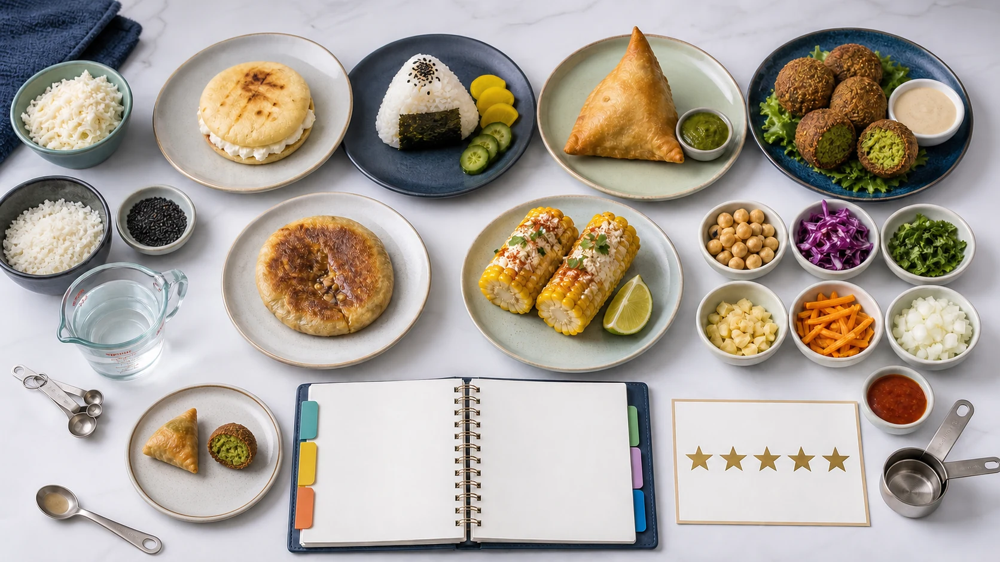

Ingredients: made with
Use made with when you name ingredients in food or drinks.
Model: The snack is made with rice, seaweed, some vegetables, and a little sauce.
Practice Lab - Unit 5 Writing
Create one evidence-based entry for the Class Global Snack Guide. Explain ingredients, quantities, sensory evidence, cultural context, and your recommendation.
Your mission
Choose one snack or small dish that you can describe accurately. Your teacher will receive the finished review and may read selected responses with the class.

Workshop route
The mission stays visible above. The language support, professional model, planning organizer, and final submission open only when you need them.
Use these resources to make the review specific. They are examples and reference language, not questions to answer.
Use made with when you name ingredients in food or drinks.
Model: The snack is made with rice, seaweed, some vegetables, and a little sauce.
Avoid: The snack is made of some cheese and a little oil.
Use: The snack is made with some cheese and a little oil.
One small serving is enough for a light snack. Two pieces can be filling. It is usually served warm in a small bowl.
In my experience, people often eat it... It reminds me of... It is similar to... It is different from... Avoid claims about what everyone in a country always does.
The colors identify the job of each part. The audio models were produced with ElevenLabs in American English and match the visible scripts.
I reviewed a small cheese arepa connected to Colombian street food. It is made with corn flour, cheese, a little butter, and some fresh sauce. I give it four out of five because it is warm, salty, crispy on the outside, and soft inside. One small arepa is enough for a light snack, but two pieces can feel filling. Culturally, it reminds me of food people buy on the way to school, work, or a family visit. I would compare it with other simple snacks because it is affordable, practical, and easy to share. I recommend it for a class food fair because students can describe its ingredients, texture, quantity, and cultural meaning clearly.
This snack is made with corn flour, cheese, and a little oil.
I would give it four out of five because it is crispy outside, soft inside, and not too heavy.
It reminds me of street food because it is simple, warm, and easy to share.
Listen for the complete route: context, ingredients, quantities, sensory evidence, culture, rating, and recommendation.
Collect your evidence here. The organizer creates only a route for your paragraph; it will not write the final review for you.
Use these points to organize your own sentences. Do not copy them as a finished paragraph.
Write the complete review in your own words. The evidence checker identifies missing components; it does not correct or generate your sentences.
Planner information is complete.
The final review uses the ingredient phrase.
Two different amounts or measures appear.
Two precise taste or texture words appear.
A portion, container, or serving detail appears.
A respectful link, memory, similarity, or difference appears.
The rating is supported with because.
The reader receives a useful final recommendation.
This compact view shows the information attached to the review in the teacher's gradebook.
This confirmation remains available after the page is reloaded.
Follow-up only: the teacher receives and can read the review. The activity is recorded in the grade grid with weight 0 and does not change the accumulated course percentage.